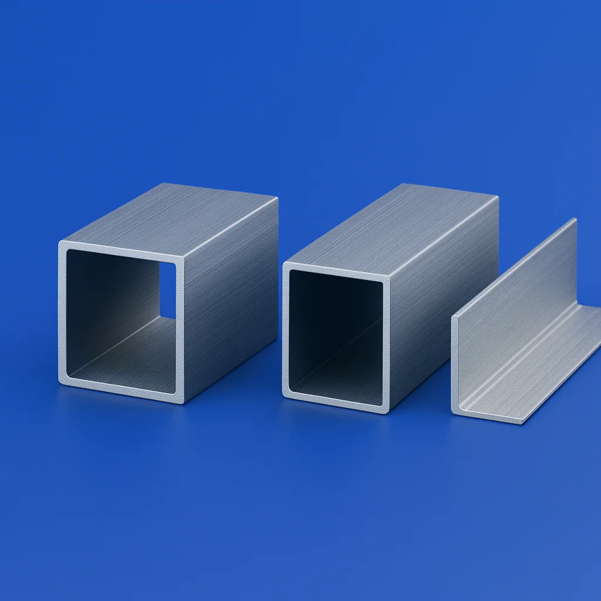
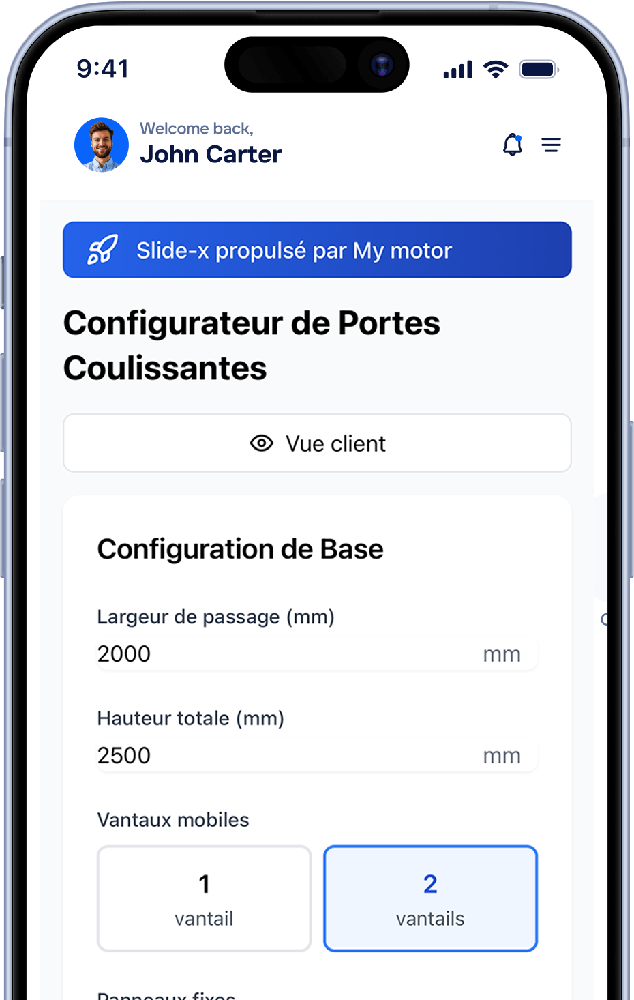

La porte automatique des pros
Fabriqué au pied du Vercors - Livraison 12 jours (15 jours avec options)
✅ Simple à installer
✅ Rapide - Livraison standard 12 jours (15 jours avec options laquage/vitrage)
✅ Service technique dédié
Nos portes piétonnes
Découvrez nos portes piétonnes automatiques Slidex, idéales pour les commerces, ERP et espaces professionnels. Installation rapide, design moderne, fonctionnement silencieux et compatible PMR. Nos portes automatiques un vantail ou deux vantaux offrent une ouverture fluide et sécurisée. Slidex, la solution simple et rapide pour vos portes piétonnes automatiques.

Nos kits de rénovation
Remplacez facilement vos anciennes motorisations toutes marques (Record, Portalp, Dormakaba…) grâce à nos kits compatibles et prêts à poser.

Nos aluminiums
Profilés aluminium, finitions et options esthétiques pour s’adapter à l’architecture de vos projets (laquage, teintes, accessoires).
5% de remise annuelle
Rejoignez notre réseau d’installateurs et profitez de 5 % de remise, ainsi que d’une production prioritaire pour garantir des délais ultra courts.
✅ Portes automatiques disponibles en 12 jours (15 jours avec laquage et vitrage)
✅ Kits de rénovation compatibles toute marque (Record, Portalp)
✅ Support technique dédié
Pensée pour les installateurs de portes automatiques
⚡ Délais record garantis :
• Portes standard livrées en 12 jours (15 jours avec vitrage et laquage)
• Stock permanent de pièces détachées
• Production française au pied du Vercors
• Pas d'attente sur chantier = plus de rentabilité
🛠️ Support technique réactif :
• Assistance téléphonique directe
• Réponse en ligne sous 2h ouvrées
• Documentation technique complète
• Formation installation disponible
📦 Garantie pièces détachées :
• Stock SAV permanent garanti 10 ans
• Pièces compatibles toutes marques
• Livraison express en cas d'urgence
• Pas de rupture de service pour vos clients

Et si on fabriquait vos portes automatiques ensemble ?
Basée au pied du Vercors 🇫🇷, SlideX conçoit et produit des portes piétonnes automatiques pour les professionnels. Fabrication rapide, support réactif et qualité 100 % française.
38180 - Seyssins
Un process simple et rapide, conçu pour les pros
Inscription & validation
Créez votre compte professionnel en quelques clics pour accéder à notre configurateur et à nos tarifs pros. 👉 Pour garantir que nous travaillons uniquement avec des installateurs professionnels, chaque demande est vérifiée et validée manuellement par notre équipe.
Configurez votre porte
Utilisez notre configurateur en ligne pour choisir les dimensions et options adaptées
Personnalisez votre porte
Choisissez chaque détail de votre porte coulissante : 👉 type de vitrage (clair, feuilleté…), coloris du profilé, couleur des joints, nombre de vantaux, et bien plus. Notre configurateur vous permet de créer une porte parfaitement adaptée à votre projet.
Installez
Recevez votre porte et procédez à l'installation avec notre documentation technique complète.

Témoignages et avis d'installateurs
Ils nous font confiance : ce qu’en disent les installateurs
Découvrez pourquoi nos partenaires choisissent nos portes et kits de rénovation pour portes automatiques

“Merci pour la qualités de vos produits, la disponibilité, votre gentilesse et votre professionnalisme...”
De plus, en cas de demande spécifique vous avez la main sur la technique pour répondre au exigences de certains clients, bravo...Difficile de trouver mieux de nos jours
“Produits TOP!!! Devis rapide!!!Personnel au TOP également, de la commerciale au support technique on nous accompagne!!!!Je recommande!”
Très bon fournisseur, toujours à l'écoute de nos besoins techniques. Service et réactivité au top.Je recommande
Je remercie toute l'équipe de mymotor, Margaux toujours à l'écoute et hyper réactive.Le SAV avec Julien est aussi un très réactif et de bons conseils, quand on a un soucis sur les poses de matériels.Je les recommandes vivement.
Nouvelles et conseils
Réseau national
Grâce à nos partenaires installateurs et représentations exclusives de proximité déployées dans tout l'Hexagone, SlideX assure à chacun de ses clients un dépannage et une réparation rapide 24/7.
Cliquez sur les marqueurs pour découvrir nos agences et partenaires dans toute la France !
Un réseau de proximité
Pour un délai de dépannage et de réparation de 30 minutes ainsi que l'installation et la fabrication de systèmes de fermeture de choix, SlideX reste à votre disposition.
Questions fréquentes
Vous avez des questions sur nos portes automatiques ? Trouvez rapidement les réponses aux questions les plus fréquentes de nos clients.
Quels sont les délais de fabrication de vos portes automatiques ?
Vos portes sont-elles compatibles PMR (Personnes à Mobilité Réduite) ?
Proposez-vous des kits de rénovation pour d'autres marques ?
Comment devenir partenaire installateur SlideX ?
Dans quelles régions intervenez-vous ?
Quelle garantie proposez-vous sur vos portes automatiques ?
Une autre question ? Contactez notre équipe